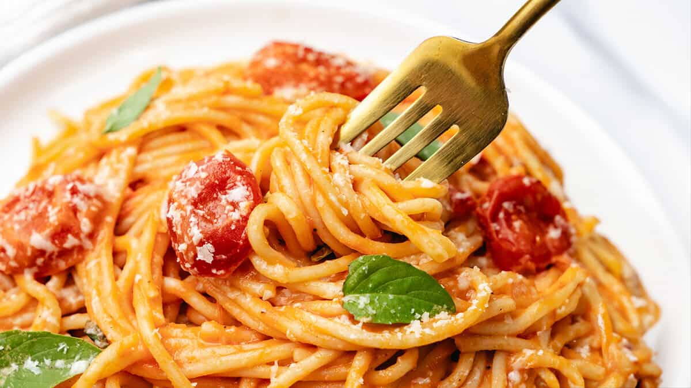

Home
Red Pasta Recipe

Description
A great non traditional dish consisting of pasta.
The recipe isn't for the faint of heart cause it's ultra hot.
Ingredients
- Pasta 500g
- Water
- Salt
- Pepper
- Red Hot Chilli Peppers chopped (no pun intended) as many as you can handle (I put 6)
- 2 tspns of tomato paste
- 3 fresh tomatoes chopped in small pieces
- Pot
- Big frying pan
- 3 tbspns of olive oil
- 1 big onion chopped in micro pieces
- 1 small piece of garlic
Steps
Cooking
- Place water in the pot. Put the pot on the stove on high heat.
- Wait for it to boil. Throw pasta in the pot. Follow the instructions
on the packaging to check required time for al dente.
- Place pan on the stove on high heat. Throw oil in. Throw onion and garlic in.
- Simmer for 2 mins. Throw peppers in. Wait for 2 mins.
- Throw tomato paste in and tomatoes salt and pepper. Add 100ml of water.
- After a few mins it will start to boil. Let it boil for 10 mins.
Serving
- Combine the pasta with the sauce.
Eat
This recipe is not accurate and not real.